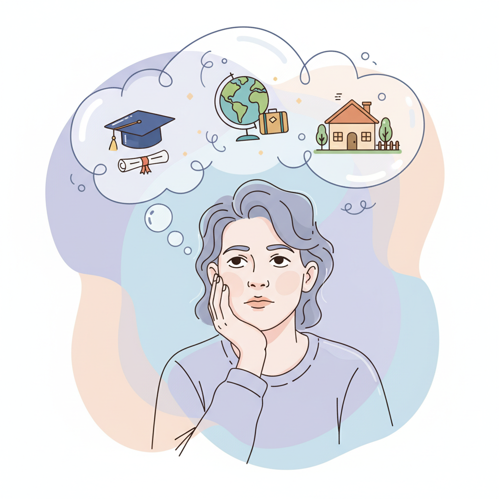
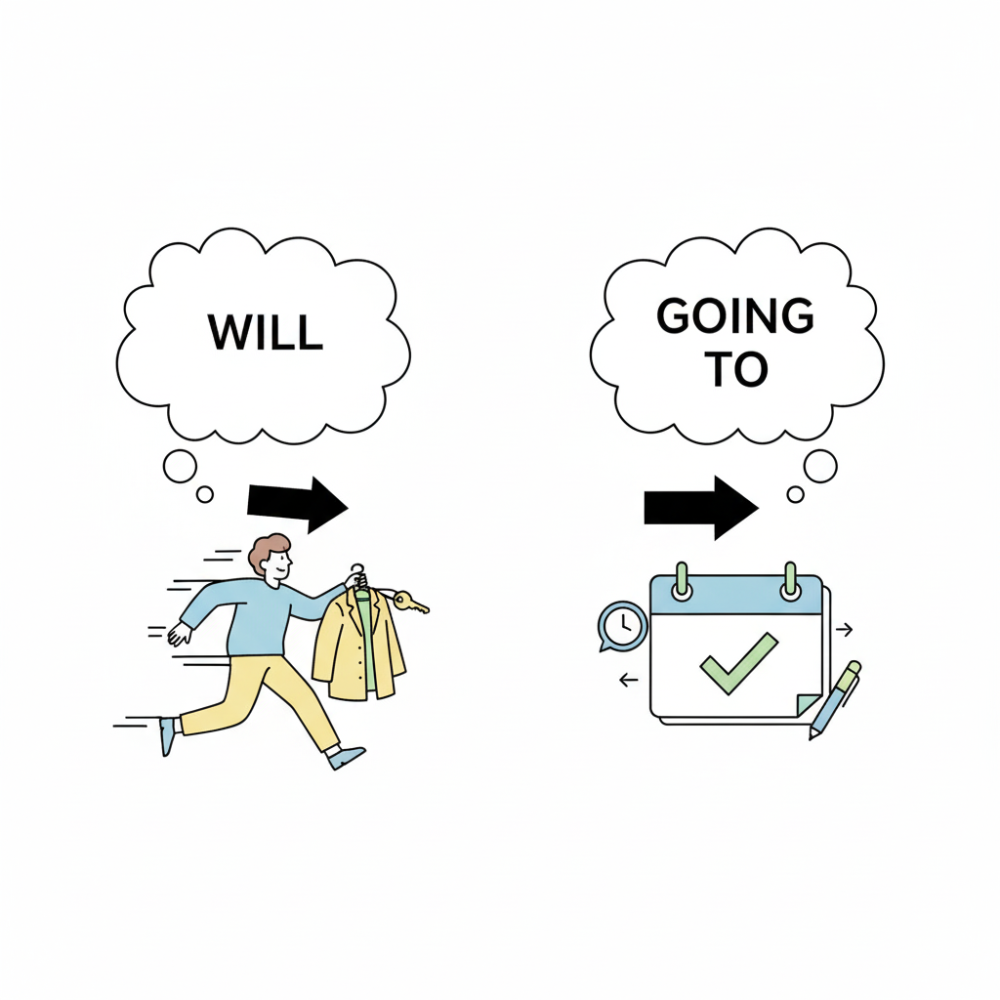
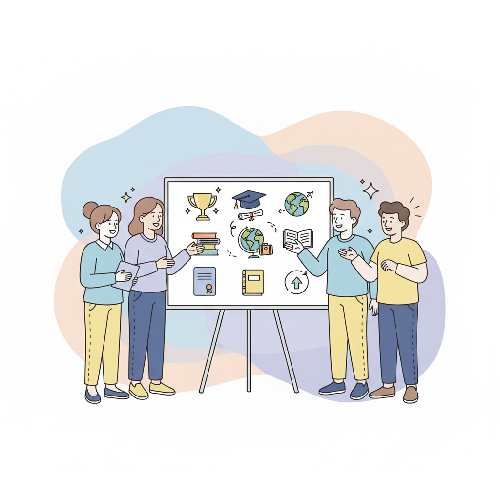
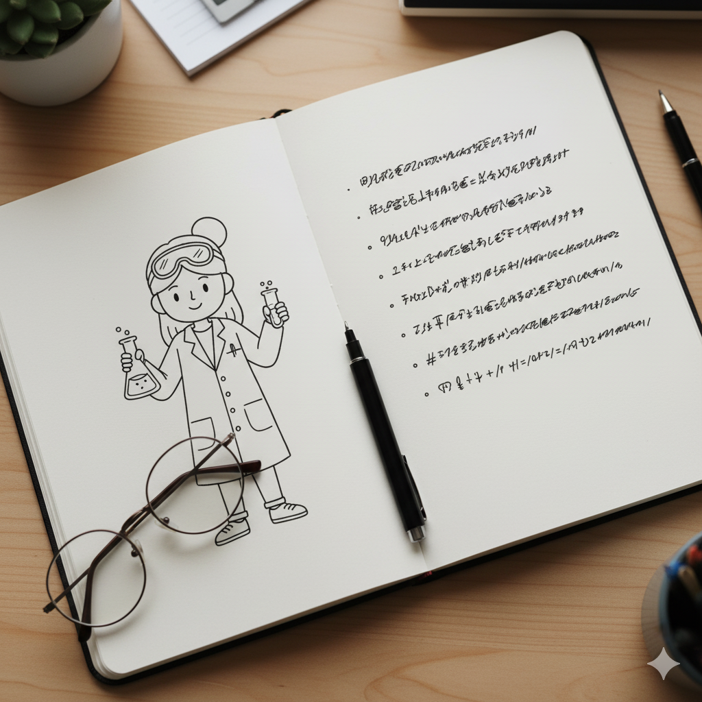
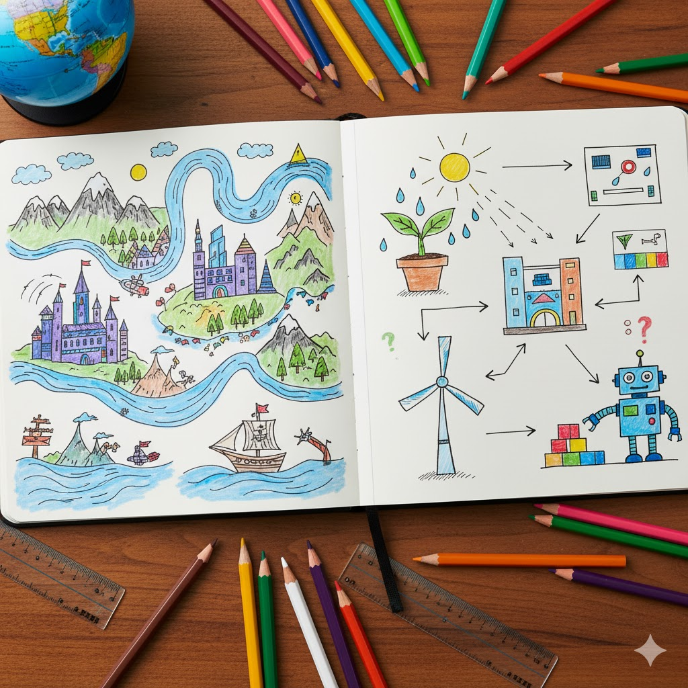

Dreaming Big & Planning Ahead
By the end of this lesson, students will be able to:
Students will discuss what they want to be or do in the future to introduce the topic.
Introduction:
"Hello everyone! Today we are going to talk about our dreams and what we will do in the future!"
大家好！今天我們將討論我們的夢想以及未來要做什麼！

Interactive activities to practice future tenses and express aspirations.
Students will learn the difference between using "will" for spontaneous decisions and "going to" for plans.
Grammar Focus:

Activity: "Plan or Prediction?"
Give students different scenarios. They must decide whether to use "will" or "going to" and form a sentence. Example: (Scenario: Your phone rings.) "I will answer it." (Scenario: You have tickets to the movies tonight.) "I am going to see a movie."
Students will practice simple conditional sentences to connect actions and their future outcomes.
Grammar Focus:
"If + Present Simple, + Future Simple." This is used for a real possibility in the future.

Activity: "Complete the Sentence."
Provide incomplete sentences for students to finish. Example: "If it rains tomorrow, I..." or "If I feel tired, I..."
Students will share a personal future plan or aspiration with the class.
Examples:
"Next year, I am going to travel to Japan." (明年，我打算去日本旅行。)

Students will write a short paragraph about their future plans and aspirations.
"Write a paragraph (5-7 sentences) about what you will do in the future. What are you going to do next year? Where will you go? What will you be?"
"In five years, I think I will be a doctor. I am going to study hard at university. If I work hard, I will help many people. I also think I will travel to different countries."

"Please write your entries on a separate piece of paper or in your notebook."
請將你的作業寫在一張獨立的紙上或筆記本裡。